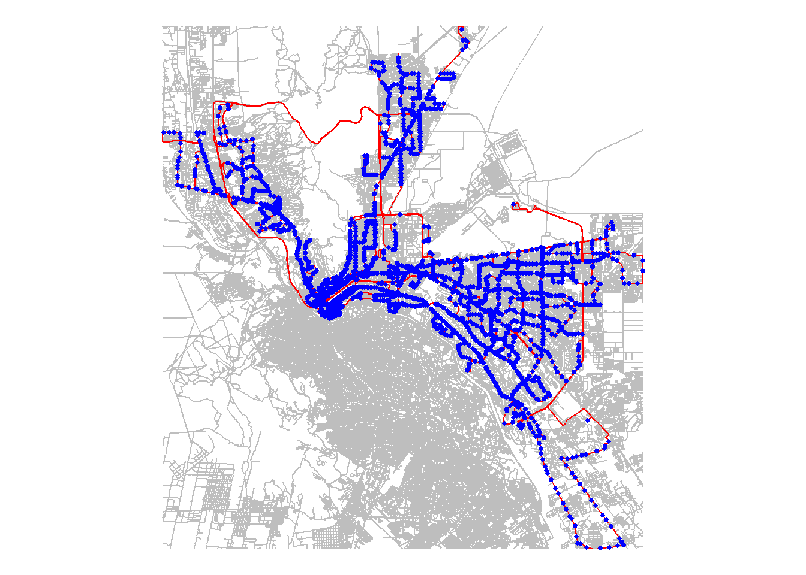
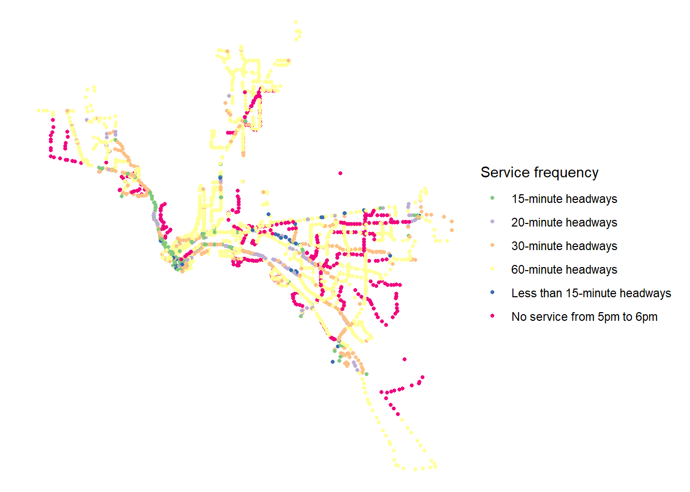
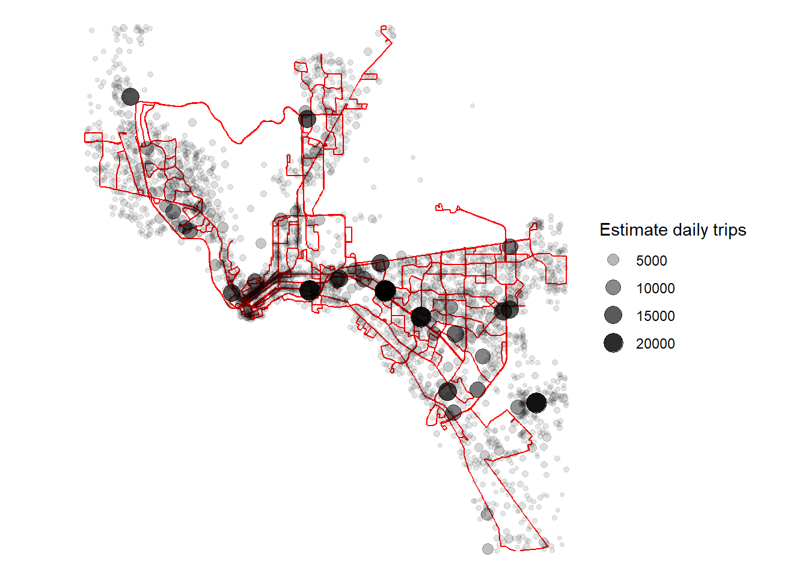
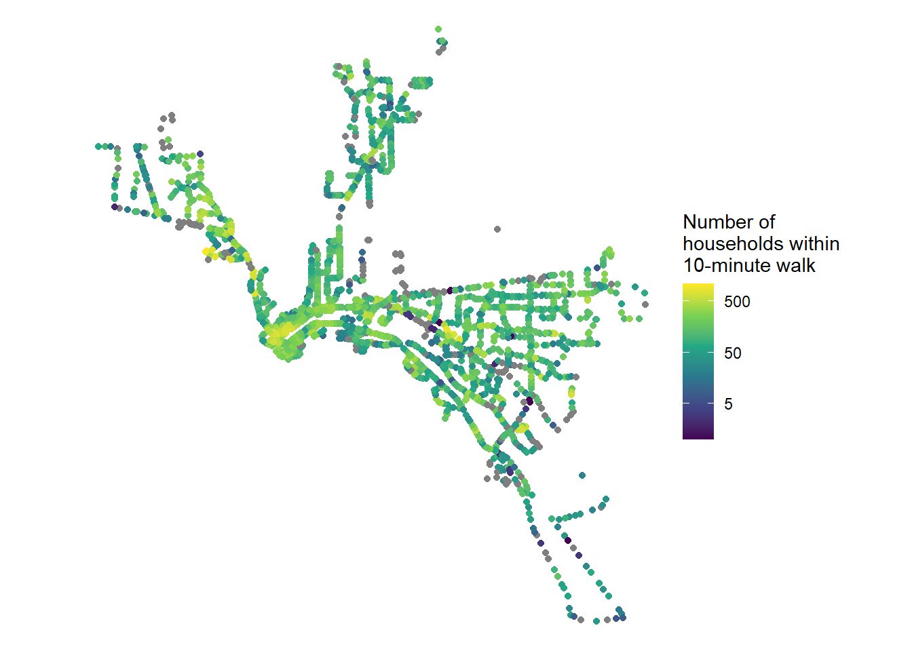
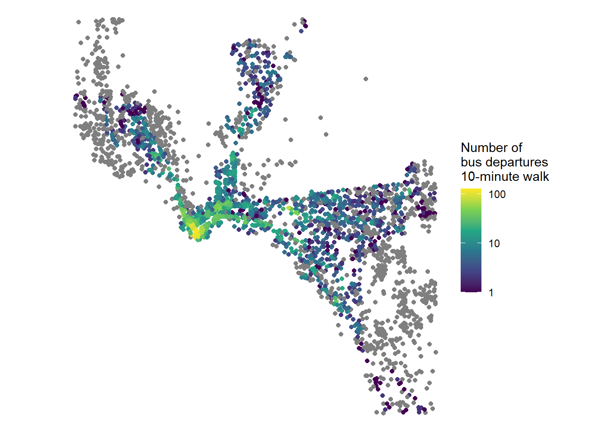

options(java.parameters = '-Xmx2G')
library(tidyverse)
library(sf)
library(r5r)
library(here)
library(knitr)
library(tidytransit)Access to and by Transit
Setup
Software installation
Download and install:
Java Development Kit (JDK) 21 (https://adoptium.net/)
Install the following packages within R:
tidyverse
sf
r5r
here
knitr
tidytransit
Data
Create a project folder.
Create an RStudio project with that project folder.
Save this Quarto file to your RStudio project folder.
Navigate to https://github.com/vibe-lab-gsd/GSD-SES-5511/tree/main/network-files and choose a study area from among the directories you see listed there.
Open that directory and download all the files you find there.
Create a subfolder called “network-files” in your project folder. Save the files you just downloaded to that subfolder.
Navigate your browser to https://github.com/vibe-lab-gsd/GSD-SES-5511/tree/main/locations, download the geojson file corresponding to your study area, and save it to your project directory.
Load packages
Run the following code to allocate 2 gigabytes of memory to Java and load the libraries you’ll be using.
Initialize R5
Run this code to set up an R5 core you will use for subsequent calculations.
my_core <- here("network-files",
"El-Paso-TX") |>
setup_r5()Map network
Here’s a quick map of the routes, stops, and streets within the study area.
streets <- street_network_to_sf(my_core)$edges
transit <- transit_network_to_sf(my_core)
routes <- transit$routes
stops <- transit$stops
routes_bbox <- st_bbox(routes)
streets_bbox <- st_bbox(streets)
area <- st_intersection(st_as_sfc(routes_bbox),
st_as_sfc(streets_bbox))
area_routes <- st_intersection(routes, area)
area_stops <- st_intersection(stops, area) |>
rename(id = stop_id)
area_streets <- st_intersection(streets, area) |>
st_cast("MULTILINESTRING")
ggplot(area_streets) +
geom_sf(color = "gray") +
geom_sf(data = area_routes,
color = "red") +
geom_sf(data = area_stops,
color = "blue",
size = 1) +
theme_void()
Save map
The following code will save the above map as a png file.
here("network-map.png") |>
ggsave(width = 6, height = 6, units = "in", dpi = 600)Map stop frequencies
As we’ve discussed, the presence of a stop is less relevant than the presence of frequent transit service. We can map the stops by how frequently they are served.
network_file_list <- list.files(path = here("network-files",
"El-Paso-TX"),
full.names = FALSE)
gtfs_files <- network_file_list[str_detect(network_file_list, ".zip")]
gtfs_data_1 <- read_gtfs(here("network-files",
"El-Paso-TX",
gtfs_files[1]))
stop_freq <- get_stop_frequency(gtfs_data_1,
start_time = "17:00:00",
end_time = "18:00:00") |>
mutate(id = paste0("google_transit:", stop_id)) |>
select(id, n_departures) |>
group_by(id) |>
summarize(n_departures = sum(n_departures))
area_stops <- left_join(area_stops, stop_freq) |>
replace_na(list(n_departures = 0)) |>
mutate(freq_cat = case_when(n_departures == 1 ~ "60-minute headways",
n_departures == 2 ~ "30-minute headways",
n_departures == 3 ~ "20-minute headways",
n_departures == 4 ~ "15-minute headways",
n_departures > 4 ~ "Less than 15-minute headways",
TRUE ~ "No service from 5pm to 6pm"))
ggplot(area_stops) +
geom_sf(data = area_stops,
size = 1,
aes(color = freq_cat)) +
scale_color_brewer(name = "Service frequency",
type = "qual") +
theme_void()
Map locations
We can also read in the centroids (points in the middle) of census blocks within the study area, display them on a map.
We’ll be filtering them to only include blocks that contain a non-zero number of households and/or jobs.
blocks <- here("locations",
"El-Paso-TX-blocks.geojson") |>
st_read(quiet = TRUE) |>
st_filter(area) |>
filter(total_emp > 0,
n_HHs > 0 )This layer of blocks includes the following attributes:
total_emp: the total number of jobs in each block.
retail_emp: the total number of retail jobs in each block.
service_emp: the total number of service jobs in each block.
basic_emp: the total number of jobs that are not retail or service jobs in each block.
n_HHs: The number of households living in each block.
hbw_attr: The estimated demand for “home-based work” trips (trips between home and work) that would be to/from each block (estimated as 1.2 times the total number of jobs in the block, based on NCHRP 7161).
hbo_attr: The estimated demand for “home-based other” trips (trips other than home-based work trips that begin or end at home) that would be to/from this block (estimated as 0.7 times the number of households plus 0.7 times basic employment plus 8.4 times retail employment plus 3.5 times service employment, based on NCHRP 716).
nhb_attr: The estimated demand for “non-home-based” trips (those that do not begin or end at home) that would be to/from this block (estimated as 0.6 times the number of households plus 0.5 times basic employment plus 4.7 times retail employment plus 1.4 times service employment, based on NCHRP 716).
total_attr: The estimated total demand for trips to/from this block.
Here’s a map that shows the variation in demand for travel to/from locations throughout the study area (transit routes are also shown for context).
ggplot(area_routes) +
geom_sf(color = "red") +
geom_sf(data = blocks,
aes(size = total_attr,
alpha = total_attr)) +
scale_alpha(name = "Estimate daily trips") +
scale_size(name = "Estimate daily trips") +
theme_void()
I’ll save that map as a .png file.
here("demand-map.png") |>
ggsave(width = 6, height = 6, units = "in", dpi = 600)Calculate accessibility to transit
You can calculate accessibility using the accessibility() function in the r5r package. You will need to specifify the following parameters:
r5r_core: The core you created in the “Initialize R5” section.origins: The locations for which you want to generate an accessibility score.destinations: The locations you want to calculate access to.opportunities_colnames: An attribute/variable of the destinations layer that indicates the weight of each destination (e.g. how many destinations are at each location).decay_function: A function that determines how to weight a destination based on how far it is from the origin. Can be “step”, “logistic”, “linear”, or “exponential.” See https://urban-stack.shinyapps.io/access-decay/cutoff: The first parameter defining the decay function (see https://urban-stack.shinyapps.io/access-decay/).decay_value: The second parameter defining the decay function (if there is a second), See https://urban-stack.shinyapps.io/access-decay/mode: The mode of transportation. Can be “WALK”, “CAR”, or “TRANSIT”. If the mode is “TRANSIT”, you should also specify the following parameters:departure_datetime: What time and day you are calculating accessibility for.time_window: Accessibility will be calculated at one-minute intervals during a window. If you want to median accessibility over a one-hour period, beginning at your specified time, set this to 60, for 60 minutes.percentiles: By default, you will get the median accessibility for the period defined by the departure time and time window, but you can also get other points in the distribution.
Accessibility to transit
Here is how you would calculate the number of households within a 10-minute walk of each transit stop in your study area.
access_to_transit_1 <- accessibility(r5r_core = my_core,
origins = area_stops,
destinations = blocks,
opportunities_colnames = "n_HHs",
mode = "WALK",
decay_function = "step",
cutoffs = 10)
head(access_to_transit_1) |>
kable()| id | opportunity | percentile | cutoff | accessibility |
|---|---|---|---|---|
| google_transit:100 | n_HHs | 50 | 10 | 200 |
| google_transit:1000 | n_HHs | 50 | 10 | 195 |
| google_transit:1002 | n_HHs | 50 | 10 | 106 |
| google_transit:1003 | n_HHs | 50 | 10 | 106 |
| google_transit:1007 | n_HHs | 50 | 10 | 215 |
| google_transit:101 | n_HHs | 50 | 10 | 0 |
Now we can join those results to our stops layer and see the number of households served by each stop.
area_stops <- area_stops |>
left_join(access_to_transit_1)
ggplot(area_stops) +
geom_sf(aes(color = accessibility)) +
scale_color_viridis_c(trans = "log",
name = "Number of\nhouseholds within\n10-minute walk",
breaks = c(5, 50, 500)) +
theme_void()
And I can save that map.
here("stops-access.png") |>
ggsave(width = 6, height = 6, units = "in", dpi = 600)Another measure of accessibility to transit would be the number of transit departures within a ten-minute walk from each census block.
access_to_transit_2 <- accessibility(r5r_core = my_core,
origins = blocks,
destinations = area_stops,
opportunities_colnames = "n_departures",
mode = "WALK",
decay_function = "step",
cutoffs = 10)
head(access_to_transit_2) |>
kable()| id | opportunity | percentile | cutoff | accessibility |
|---|---|---|---|---|
| 481410103533008 | n_departures | 50 | 10 | 9 |
| 481410017001060 | n_departures | 50 | 10 | 80 |
| 481410103461005 | n_departures | 50 | 10 | 0 |
| 481410104121001 | n_departures | 50 | 10 | 1 |
| 481410011122013 | n_departures | 50 | 10 | 11 |
| 481410038032010 | n_departures | 50 | 10 | 0 |
And now I can map those:
blocks <- blocks |>
left_join(access_to_transit_2)
ggplot(blocks) +
geom_sf(aes(color = accessibility)) +
scale_color_viridis_c(trans = "log",
name = "Number of\nbus departures\n10-minute walk",
breaks = c(1, 10, 100)) +
theme_void()
Accessibility by transit
Here is how you would calculate the median, 25th percentile, and 75th percentile number of trip attractions that are accessible from each census block with a 30-minute transit commute during the 5pm hour on Wednesday, February 28, 2024.
You’ll end up with a table with the 25th, 50th, and 75th percentile accessibility for each census block.
access_by_transit <- accessibility(r5r_core = my_core,
origins = blocks,
destinations = blocks,
opportunities_colnames = "total_attr",
mode = "TRANSIT",
decay_function = "step",
cutoffs = 30,
departure_datetime =
as.POSIXct("28-02-2024 17:00:00",
format = "%d-%m-%Y %H:%M:%S"),
time_window = 60,
percentiles = c(25, 50, 75))
head(access_by_transit) |>
kable()| id | opportunity | percentile | cutoff | accessibility |
|---|---|---|---|---|
| 481410103533008 | total_attr | 25 | 30 | 8381 |
| 481410103533008 | total_attr | 50 | 30 | 5847 |
| 481410103533008 | total_attr | 75 | 30 | 5778 |
| 481410017001060 | total_attr | 25 | 30 | 84599 |
| 481410017001060 | total_attr | 50 | 30 | 63433 |
| 481410017001060 | total_attr | 75 | 30 | 54984 |
It will be helpful to rearrange this table so that there is one row for each census block and the different accessibility value for each percentile is in a different column.
access_by_transit <- access_by_transit |>
select(id, percentile, accessibility) |>
pivot_wider(id_cols = "id",
names_from = percentile,
names_prefix = "access_pctile_",
values_from = accessibility)
head(access_by_transit) |>
kable()| id | access_pctile_25 | access_pctile_50 | access_pctile_75 |
|---|---|---|---|
| 481410103533008 | 8381 | 5847 | 5778 |
| 481410017001060 | 84599 | 63433 | 54984 |
| 481410103461005 | 5005 | 5005 | 5005 |
| 481410104121001 | 2546 | 2546 | 2546 |
| 481410011122013 | 28008 | 14402 | 10027 |
| 481410038032010 | 2204 | 2204 | 2204 |
Now we can join this to our layer of census block centroids and see how access by transit varies across the study area.
blocks <- blocks |>
left_join(access_by_transit)
ggplot(blocks) +
geom_sf(aes(color = access_pctile_50),
size = 1) +
scale_color_viridis_c(trans = "log",
name = "Median accessibilty\nto destinations",
breaks = c(20, 200, 2000, 20000)) +
theme_void()And I can save that map.
here("block-access.png") |>
ggsave(width = 6, height = 6, units = "in", dpi = 600)Stop R5
Once you’re done with your calculations, you can stop R5, which will release the memory it’s using.
stop_r5()Save data
You might want to work with this data using other GIS software. Here is how you would save all this data to an ESRI geodatabase.
st_write(area_stops,
dsn = here("el-paso.gdb"),
layer = "stops",
quiet = TRUE,
append = FALSE)
st_write(area_routes,
dsn = here("el-paso.gdb"),
layer = "routes",
quiet = TRUE,
append = FALSE)
st_write(area_streets,
dsn = here("el-paso.gdb"),
layer = "streets",
quiet = TRUE,
append = FALSE)
st_write(blocks,
dsn = here("el-paso.gdb"),
layer = "blocks",
quiet = TRUE,
append = FALSE)And here is how I would save the data in the blocks and stops files as csv files (without the geospatial data).
area_stops |>
st_drop_geometry() |>
write_csv(file = here("stops_access.csv"))
blocks |>
st_drop_geometry() |>
write_csv(file = here("blocks_access.csv"))